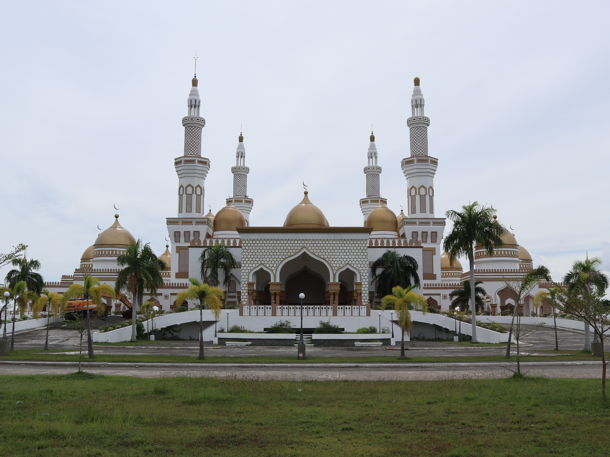
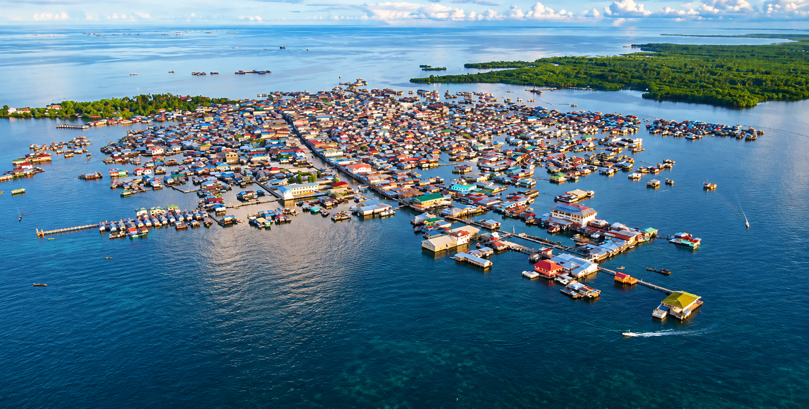
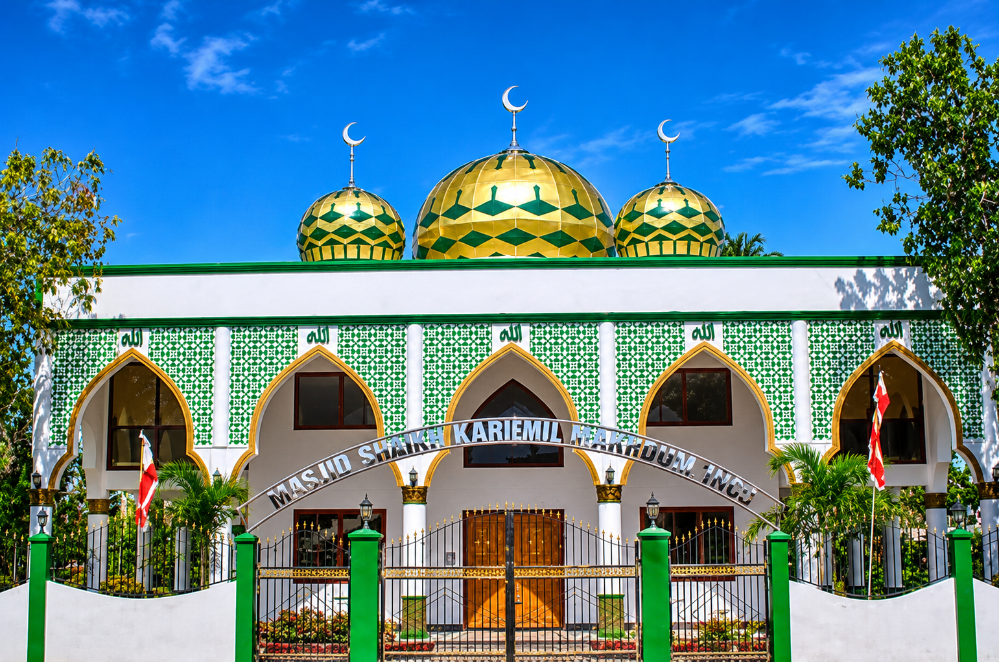
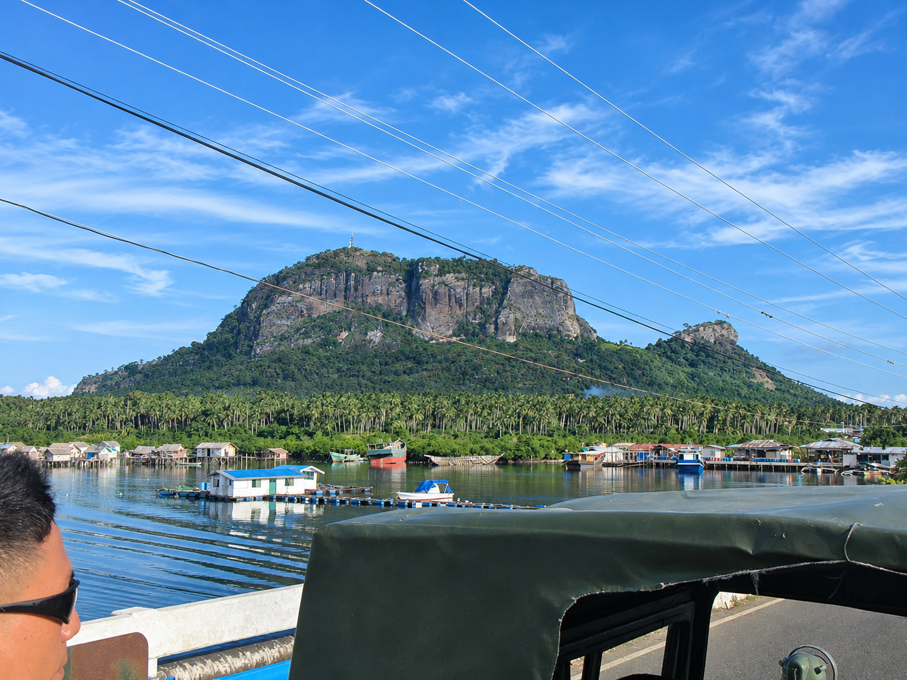
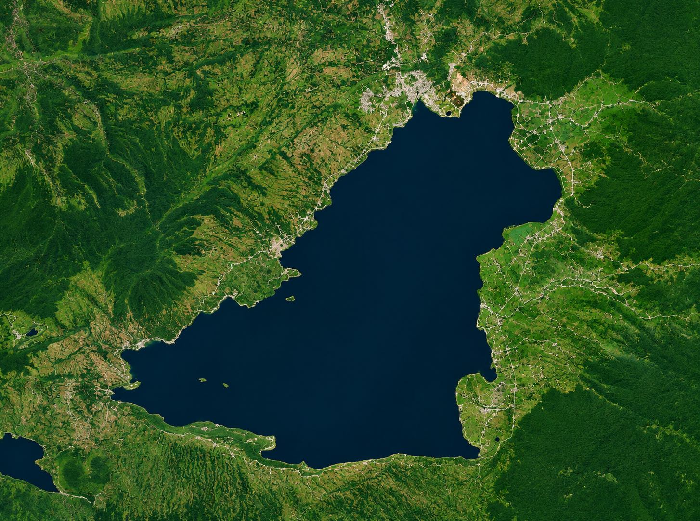

THE PHILIPPINES · A DIFFERENT PERSPECTIVE
Meet the landscapes, flavors, and living traditions of the Bangsamoro. Your next story starts here.
Cotabato City
Sultan Haji Hassanal Bolkiah Masjid, also called the Grand Mosque. Its golden dome and tall minarets stand out in the city skyline.
Sitangkai, Tawi-Tawi
Called the “Venice of the South” because houses stand on stilts above the sea and boats link them.
Simunul, Tawi-Tawi
Sheikh Karimul Makhdum Mosque, built in 1380, is considered the oldest mosque in the Philippines.
Bongao, Tawi-Tawi
A mountain above Bongao town with a long trail. Wild monkeys live along the path, so keep your food covered.
Marawi City & Lanao del Sur
The largest lake in Mindanao and the center of Maranao life, with rich traditions in weaving, brasswork and okir carving.
WELCOME TO THE BANGSAMORO
BARMM is the Bangsamoro Autonomous Region in Muslim Mindanao. It includes Basilan, Lanao del Sur, Maguindanao del Norte, Maguindanao del Sur, Tawi-Tawi, Cotabato City and the Special Geographic Area.
The region is home to Islamic heritage, large lakes, island communities and a strong tradition of weaving, carving and cooking. Use this website to find places to visit, things to do, local culture and a simple travel plan.
PLACES THAT STAY WITH YOU
Find your kind of escape.
A MOMENT IN THE BANGSAMORO
Lakes, mosques and living heritage.
Click the top photo to flip to the next one.
GO WITH CURIOSITY. TRAVEL WITH CARE.
Less rushing.
More discovering.
Start with three days in Cotabato City. Leave room for a conversation, a shared meal, and something unexpected.
Build your three-day escape ↗BEFORE YOU GO
A little local know-how.
Where should I start?
Choose one area for a short visit. Our sample itinerary stays in Cotabato City so you can spend more time exploring and less time traveling.
What should I wear when visiting a mosque?
Wear modest clothing and follow the site's guidance on head coverings and footwear. Ask permission before entering or taking photographs.
Can I book a tour through this website?
This is a student tourism guide, not a booking service. Contact a local tourism office or accredited operator to arrange your visit.